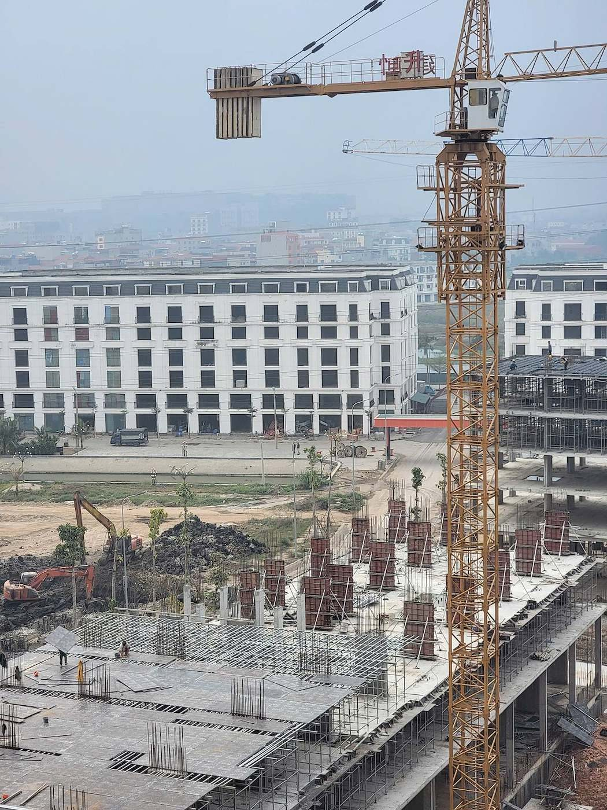
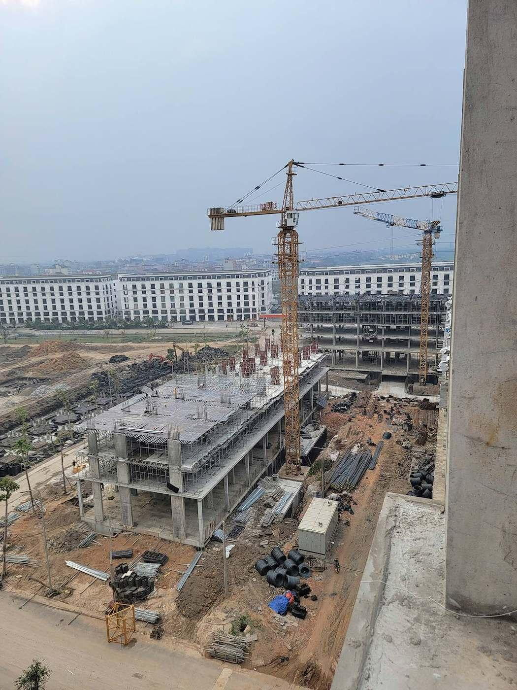
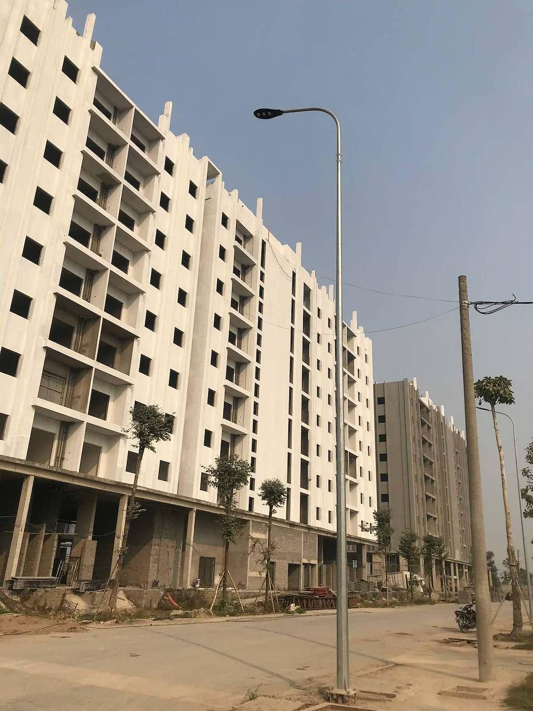
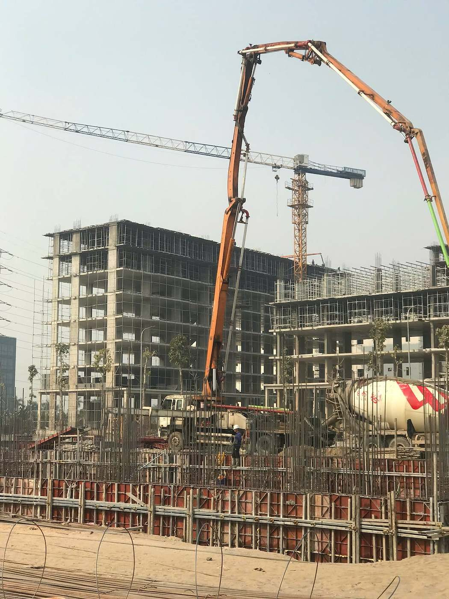
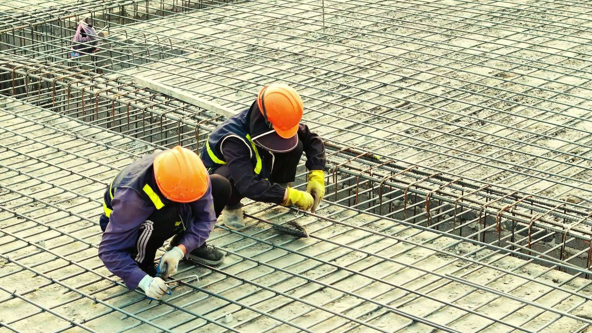
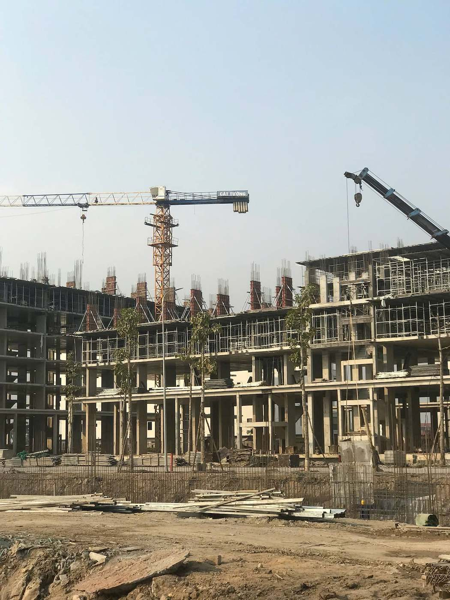
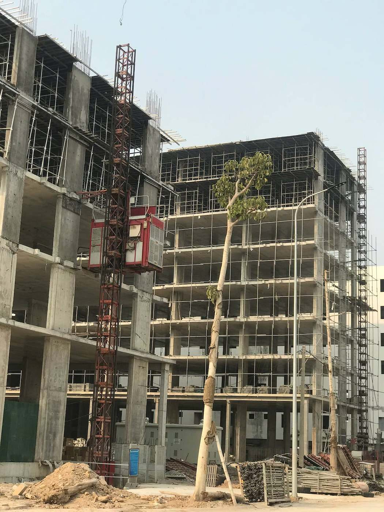
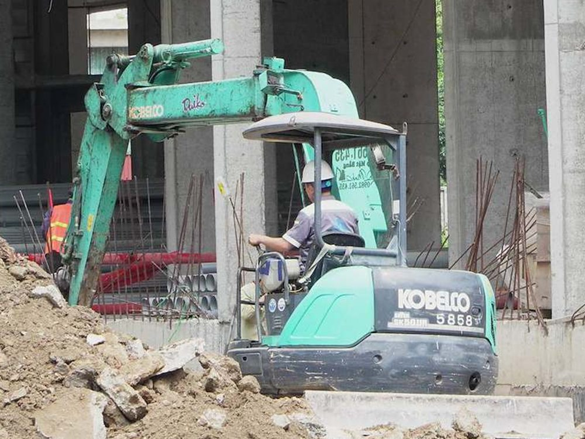
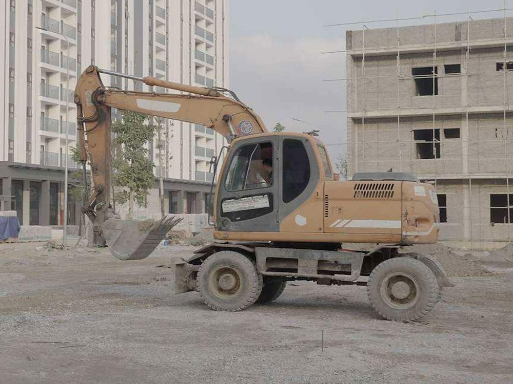
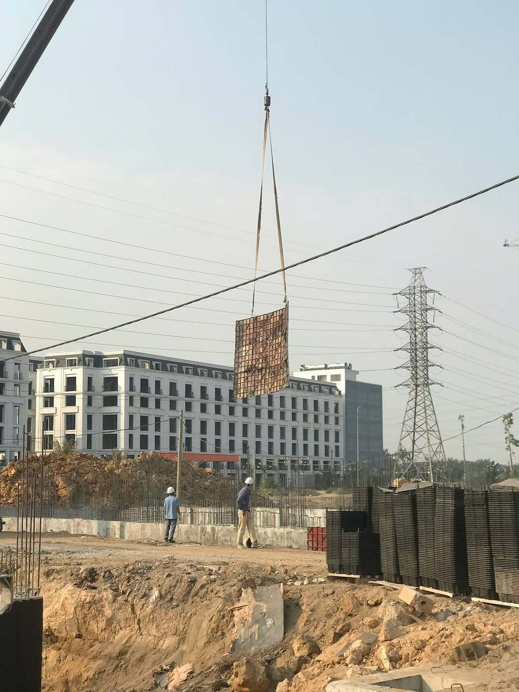

Cẩu tháp
Nâng hạ cốt thép, cốp pha và vật tư lên các tầng.

Kinh nghiệm thi công đồng thời nhiều khối nhà cao tầng trên cùng một đại công trường.
Tại Cát Tường Smart City, các khối nhà được thi công cuốn chiếu: khối này hoàn thiện, khối kế tiếp lên kết cấu, hạ tầng nội khu chạy song song.



Huấn luyện an toàn cho công nhân mới, kiểm tra bảo hộ, giàn giáo, điện thi công hằng ngày; cán bộ HSE chuyên trách tại công trường.
Nghiệm thu cốt thép, cốp pha trước khi đổ bê tông; nghiệm thu từng tầng theo mã khối, có biên bản và ảnh đối chiếu.
Tiến độ tổng chia theo khối và tầng; nhật ký thi công và báo cáo định kỳ gửi chủ đầu tư.

Kỹ sư kết cấu, kỹ sư MEP, cán bộ QS, cán bộ an toàn và các tổ đội thi công làm việc trực tiếp với Ban chỉ huy.
Kỹ sư, cán bộ kỹ thuật và tổ đội lành nghề.
Cẩu tháp, vận thăng, bơm bê tông, xe nâng, máy đào.
Hình ảnh chụp thực tế tại công trường của Cát Tường.

Nâng hạ cốt thép, cốp pha và vật tư lên các tầng.

Cẩu lắp cấu kiện và vật tư nặng tại các khu vực thi công.
Bơm bê tông móng, sàn và cột với tầm với lớn.

Vận chuyển bê tông tươi tới vị trí đổ.

Đưa người và vật tư lên các tầng trong giai đoạn hoàn thiện.

Đào móng, san gạt ở khu vực hẹp sát công trình.

San gạt, xúc chuyển vật liệu và thi công hạ tầng nội khu.

Hệ cốp pha, giàn giáo phục vụ thi công kết cấu các tầng.